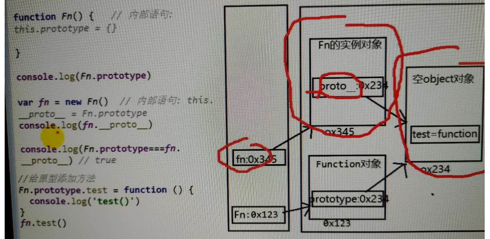
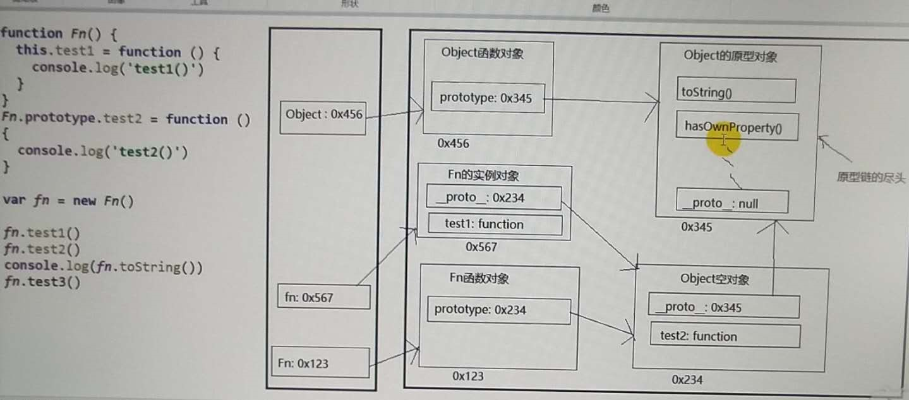

1.js本来没有类，只有函数。每个函数都有个prototype属性，即显式原型（属性），它默认指向一个空Object实例对象（原型对象），
空对象没有我们的属性。
2.原型对象中有一个属性constructor，它指向函数本身。
3.函数的所有实例对象都自动拥有原型中的属性（方法），利用prototype给原型对象添加属性（方法）。
4.每个实例对象都有一个__proto__，称为隐式原型（属性）。
5.函数的prototype属性：在定义函数时自动添加，默认值为空Object对象；
对象的__proto__属性：创建对象时自动添加，默认值为构造函数的prototype；
程序员能直接操作显式原型，但不能直接操作隐式原型（ES6之前）

6.**********prototype给原型对象添加方法f后，函数对象实例内是没有f的，所以找到__proto__，再找到原型对象。
这就是通过实例调用原型的方法。
7.原型链：访问一个对象属性时，先在自身属性中找，找到返回；
如果没有，再沿着__proto__这条链向上查找，找到返回；如果最终没找到，返回undefined
别名：隐式原型链
作用：查找对象的属性（方法）
构造函数的实例对象自动拥有构造函数原型对象的属性，利用的就是原型链。

8. function Foo(){} 相当于 var Foo= new Function()
而Function = new Function()是唯一的情况，自身的隐式和显示相同。
所有实例的__proto__都是一样的，因为都是new Function()产生的，是Function的prototype
9.函数的显式原型，它默认指向一个空Object实例对象（但Object指向null）。
10.所有函数都是Function函数的实例，包括Function也是它自身的实例。
11.执行函数定义时创建了函数对象，但是还没有执行函数（加括号才执行）。